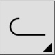
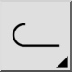

D ポリライン描画
ツールバー/アイコン:


メニュー: D 描画 > P ポリライン > D ポリライン描画
ショートカット: P, L
コマンド: polyline | pl
ツールバー/アイコン:


メニュー: D 描画 > P ポリライン > D ポリライン描画
ショートカット: P, L
コマンド: polyline | pl
このツールはポリラインを描画します。
ポリラインは、1つ以上の連続しているラインあるいは弧セグメントから形成されます。
新しいポリラインを描画するために通常のラインツールおよび弧ツールを使用するほうがほとんど常に便利であることに注意します。
緩く接続しているラインおよび弧セグメントは「断片からポリラインを作成」ツールを使用して、ポリラインエンティティに変換することができます。
ポリラインが弧セグメントを含んでいる場合、「弧」チェックボックスをチェックして、弧セグメントの終了点をセットする場合オプション・ツール・バーに弧半径を入力することができます。
弧は、最後のセグメントに滑らかに(接線)接続します。